是的没错，西柚云又更新了
原文：https://mp.weixin.qq.com/s?__biz=MzAwMzIzOTk5OQ==&mid=2247531891&idx=1&sn=ae1b4e3e3f4049bac9d8692e4429a5e4&chksm=9b3c0423ac4b8d35b71709c53035176fdc5e84e6923a9fec1e1c97fde64c5c026938f53049f8#rd 合集：服务器
前言
大禹系统完整版上线啦，即日起大家可以在大禹系统一个平台上完成下单、续费、云服务器管理、提交技术工单等全流程操作(终于不用通过两个系统跳转了)。原官网https://www.xiyoucloud.net/aff/UPWEQQBD即将下线，历史数据将会同步到大禹系统(https://dayu.xiyoucloud.net/dayu/api/v1/anonymous/affiliate/Biomamba)，大家在原官网的全部操作后续均可在大禹系统完成，现在一起看看都有哪些功能改动吧。

系统功能介绍
首页
西柚云的一些介绍，为什么选择西柚云生信服务器？五大特点业界领先！
- 【独立环境】每个用户系统之间完全隔离，拥有root权限的同时确保数据防泄漏
- 【灵活调度】可以在不同服务器之间灵活调度，随着计算节点的增加，真正实现共享的价格独享的体验。节点拥挤的时候可以迁移实例到其它节点使用，无需重新修改主机和端口
- 【开箱即用】提供多个基础环境镜像，预装上千R包，与多个博主合作打造课程配套镜像，复现课程更轻松
- 【数据保障】分布式存储多副本数据备份，更可靠，还可选配实例快照功能，实现环境的一键回滚
- 【入侵防御】提供免费的网络入侵防御，拦截SSH爆破与Rstudio、Jupyter等密码猜解等网络攻击
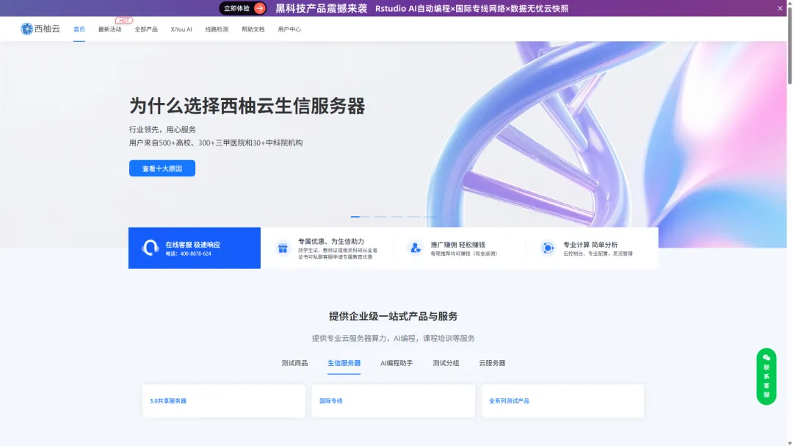
XiYou AI
西柚云推出的Rstudio智能编程助手介绍，详情参考往期文章Rstudio能直接使用DeepSeek了？、Rstudio接入DeepSeek保姆级教程主要功能有：
- 在最常用IDE Rstudio中可以直接唤起聊天框与AI对话，让AI在线解疑答惑
- 在代码框中以自然语言注释表达需求，让AI帮忙写代码
- 选中指定的代码，使用AI的能力一键详细注释代码
- 在代码的关键点位加上添加云日志的功能，就能在手机上看到具体的日志信息
线路检测
- 西柚云提供了多线接入的能力，在此页面用户可以看到各线路的状态，如果某个运营商线路故障了，可以切换到另外的线路访问。另外在此页面，用户也能看到看到西柚云网络入侵防御系统的情况，可以看到自己的IP是否被封禁了。
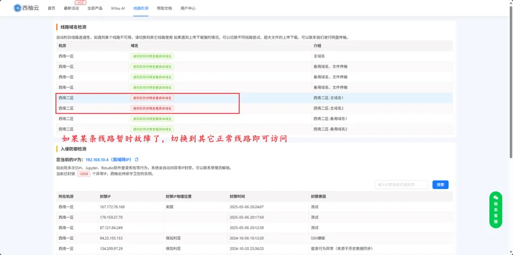
帮助文档
- 我们使用飞书文档构建了丰富的知识库，并做好了分类，大家可以分类查看，也可以登录飞书后按照关键字检索。
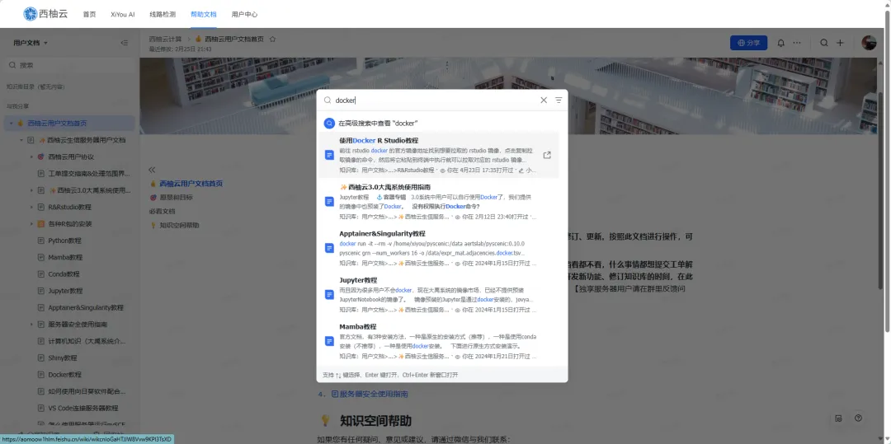
用户中心
注册
-
西柚云系统支持手机号注册、邮箱注册、微信扫码绑定手机号注册三种注册方式，建议优先手机号注册，因为后续的实名认证是需要用到手机号的。可以访问以下网址注册：
-
https://dayu.xiyoucloud.net/dayu/api/v1/anonymous/affiliate/Biomamba
- https://biomamba.xiyoucloud.net/
微信扫码绑定关联手机号
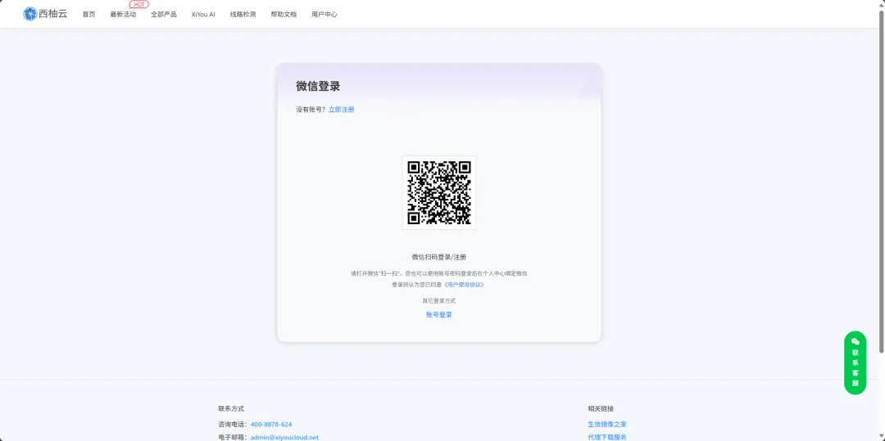
手机号或邮箱注册
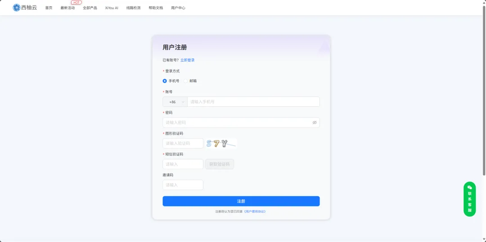
登录
- 用户可以使用微信快捷登录，也可以使用西柚云官网的账号密码进行登录。（老用户可以使用账号密码登录后在个人中心绑定微信，后续直接扫码快捷登录）
- 注意：使用旧官网账号密码登录的话，数据都是从西柚云官网导入的，输入在原系统的手机号和密码即可。（如果在西柚云官网中的密码中包含字符&，可能导致无法登录大禹系统，建议在原系统修改密码10分钟后重新登录大禹系统）
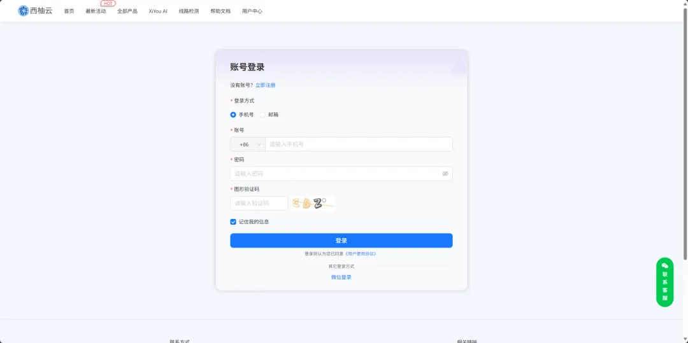
- 登录后有两个地方退出登录
方法1：登录后在右上角用户信息处点击退出登录
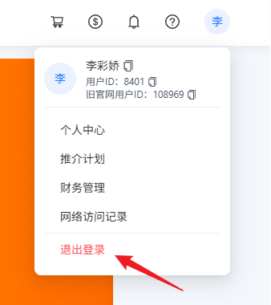
方法2：点击logo回到首页，然后个人中心页面点击退出登录。
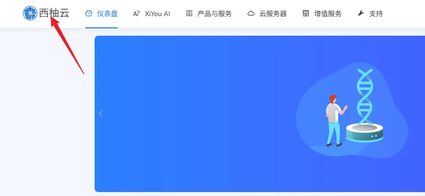
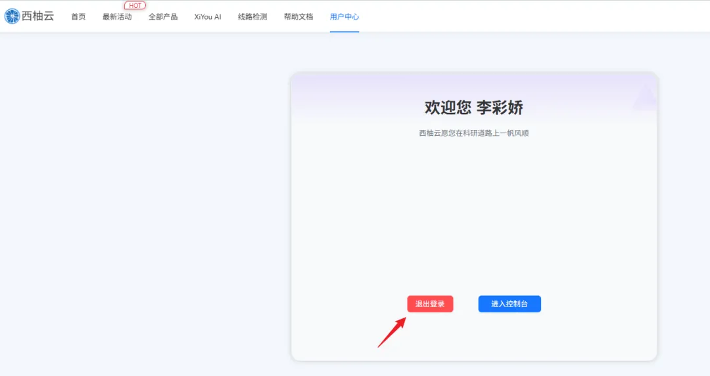
仪表盘
- 用户登录后首先来到的是仪表盘页面，在这里用户可以看到公告栏的公告，以及看到云服务器的概览情况和实例列表，点击实例名称可以快捷跳转到对应的实例详情页面。在这里也能看到工单、推介、积分等数据。
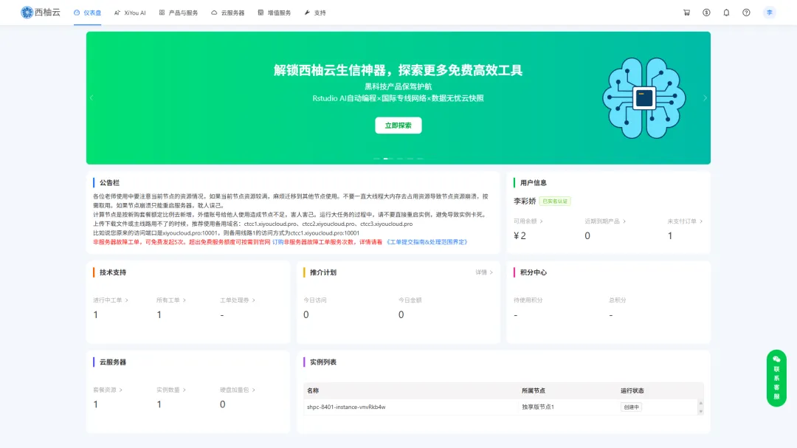
产品与服务
购物车&订购产品
- 用户在订购产品页面挑选自己需要的产品下单，前往购物车结算，如果有优惠码的填写优惠码可享受对应的优惠哦。
- 挑选产品：
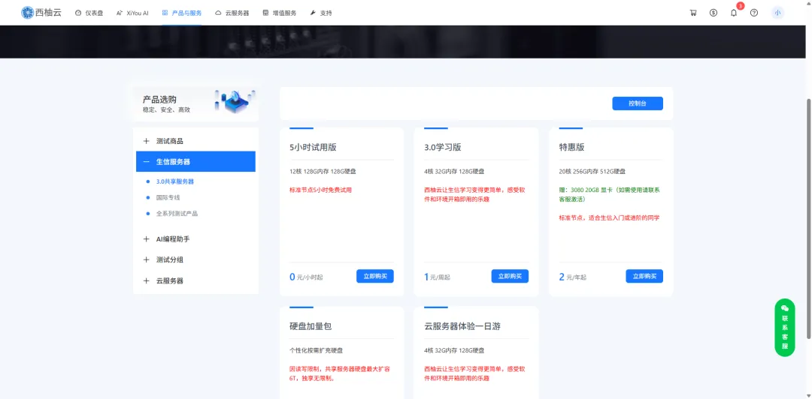
加入购物车：
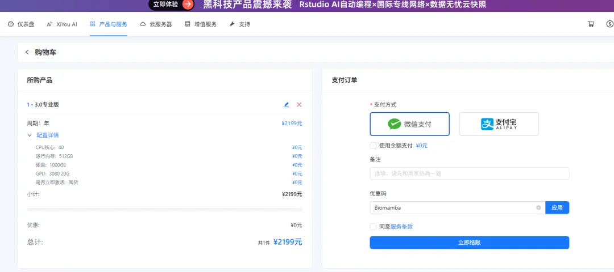
填写优惠码Biomamba：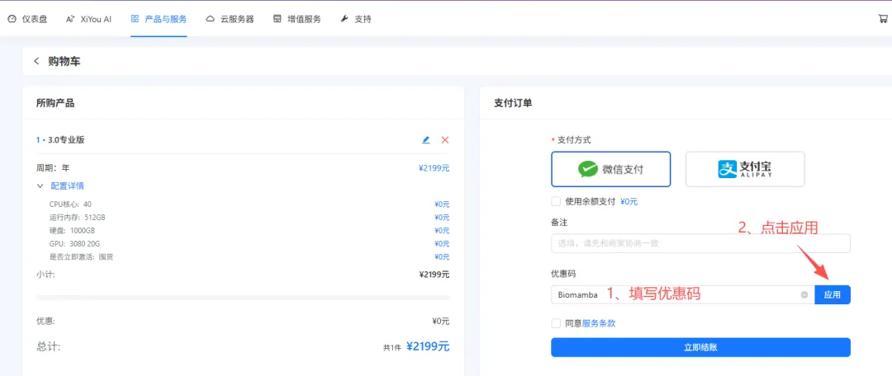
确认优惠并支付：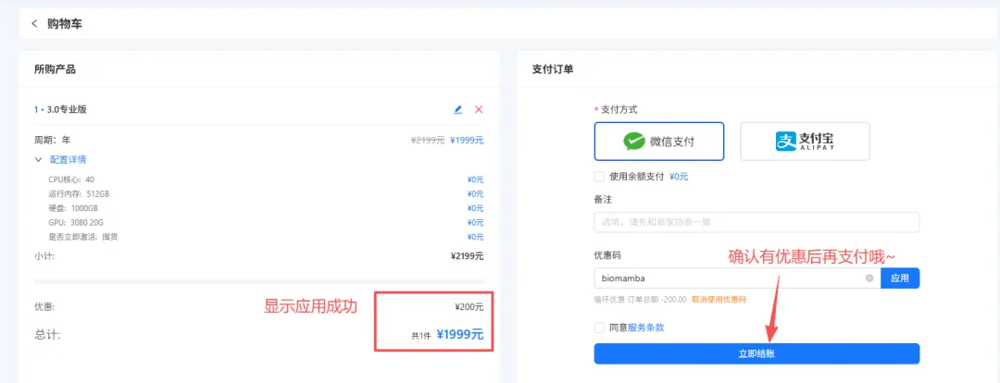
已购买的产品和服务
- 用户在这里能看到自己购买的所有产品服务，可以查看产品服务的开通时间，到期时间等信息。如果是周期性产品，可以对相关产品服务进行续费。
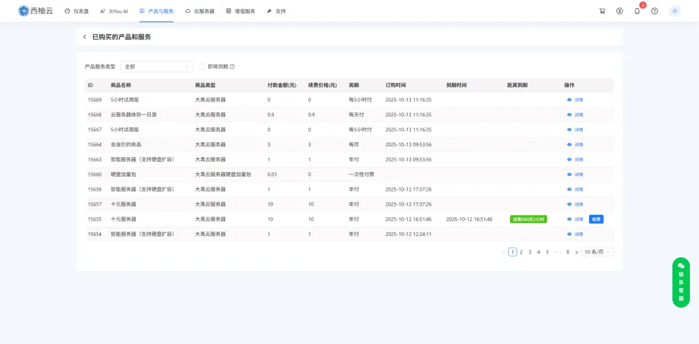
- 点击产品服务详情进入详情页面，如果支持自助开通的产品服务，用户可以自行点击激活，激活后开始计算到期时间，目前支持自助激活的产品：
- 部分大禹云服务器产品
- 国际专线产品
- Rstudio编程助手Token
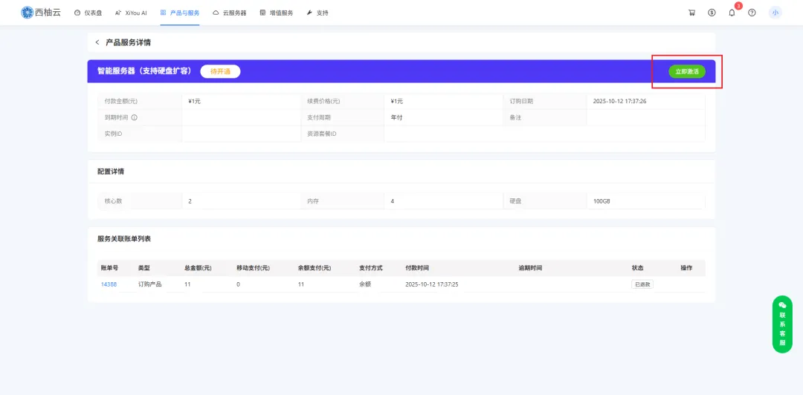
- 大禹云服务器激活后即可去创建对应的实例。
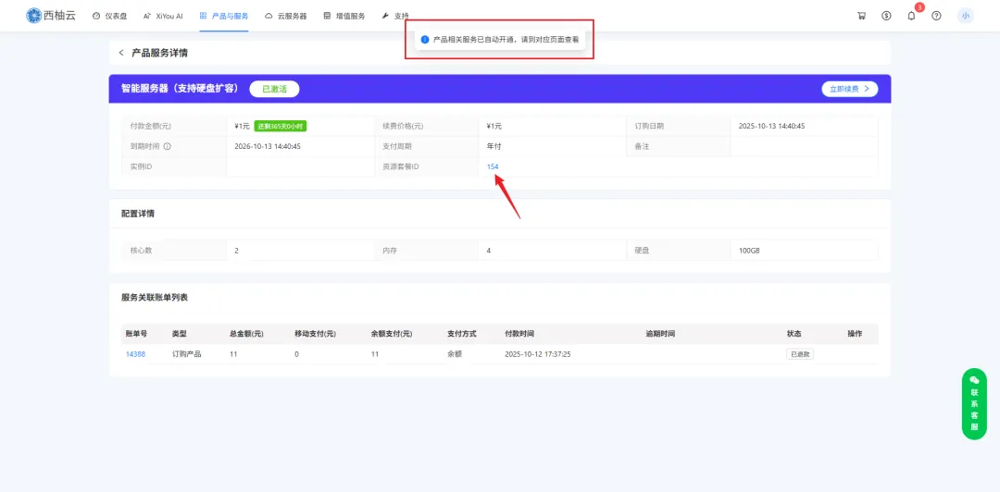
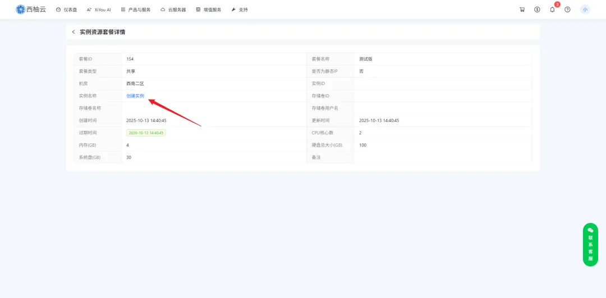
工单系统
帮助文档
- 西柚云拥有非常专业的知识库体系，大部分问题都可以通过文档自行解决
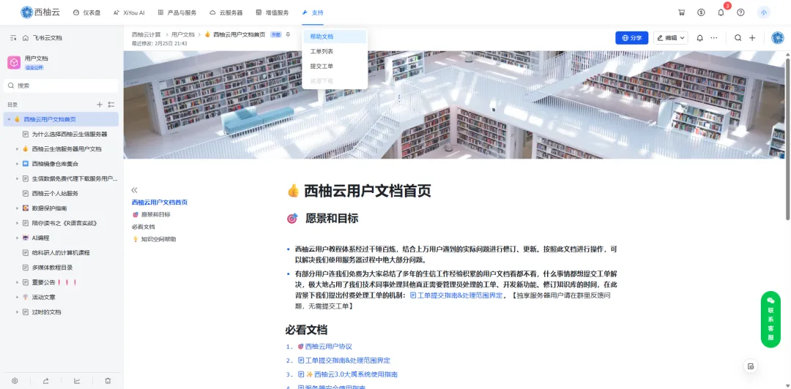
工单系统
共享服务器用户使用大禹系统的过程中，如果遇到任何问题，都可以通过提交工单来获取帮助。为了让大家更了解如何提交工单，我们整理了以下详细步骤。
如何提交工单
- 在系统首页的上方菜单栏中，找到“支持”一栏。点击“支持”，在下拉菜单中选择“提交工单”选项。
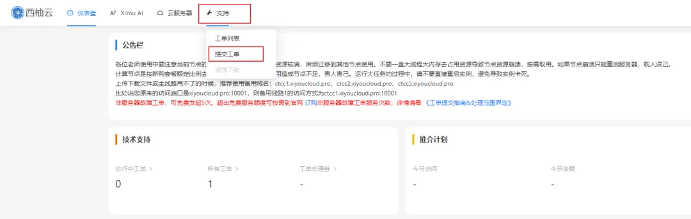
进入提交工单页面
提交工单前，请先阅读提交工单界面的帮助中心，我们的用户手册知识库已经沉淀许多经验文档会帮助到您。也可以合理使用搜索引擎，您的问题也许很普遍，已经在网上被回答了很多次，直接找到答案会更加节省您的时间
西柚云用户文档首页
西柚云用户协议
✨西柚云3.0大禹系统使用指南
各种R包的安装
- 选择工单提交部门：在工单提交页面，根据您遇到问题的性质，选择对应的部门以及问题优先级。
- 技术部门：购买产品后遇到的技术上的问题，如服务器无法登录，安装某些软件报错等
- 售前部门：购买产品前咨询任何问题
- 财务部门：推介返现、教育优惠等问题处理
- 描述问题：详细描述您遇到的问题或者需求，包括问题出现的时间、操作步骤、具体现象等。
- 上传附件：如果有相关截图或文件，点击“上传附件”按钮进行上传，以便我们更好地分析问题。
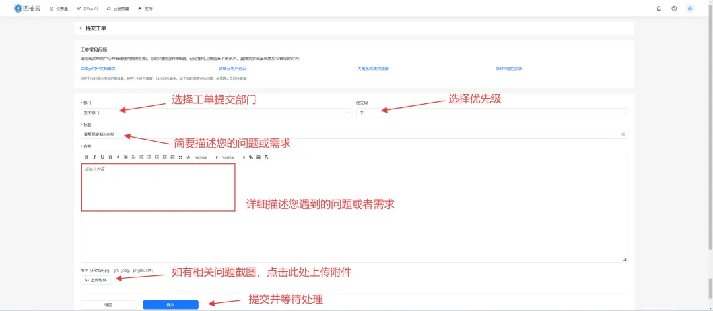
为了锻炼大家解决问题的能力，在之前的官网提交工单，需要关联工单处理券（详情：工单提交指南&处理范围界定），后续官网的功能将融合到大禹系统中，系统融合期间，无需关联工单处理券 ，希望大家遇到问题时，先到西柚云的知识库里面查询有无相关文章先尝试自己处理！
提交并等待处理
- 检查填写的信息无误后，点击“提交”按钮，完成工单提交。提交成功后，我们的客服团队会尽快查看您的工单并进行处理。
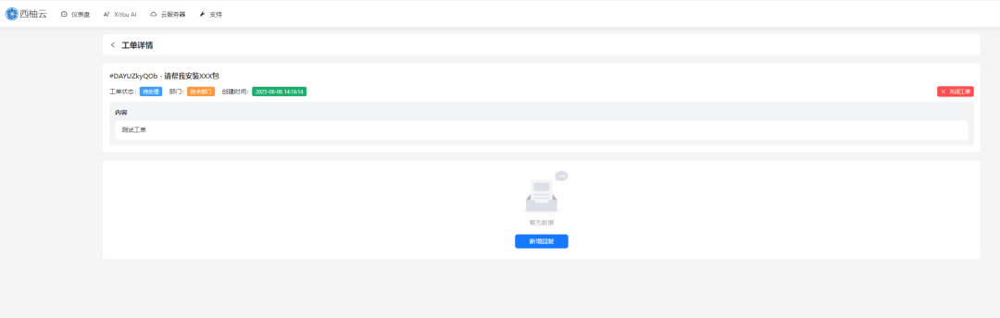
- 您也可以在工单列表处随时刷新和查看已经提交的工单，工单进度也会通过微信消息通知，请关注微信公众号：西柚云大禹系统
工单列表查看和回复通知
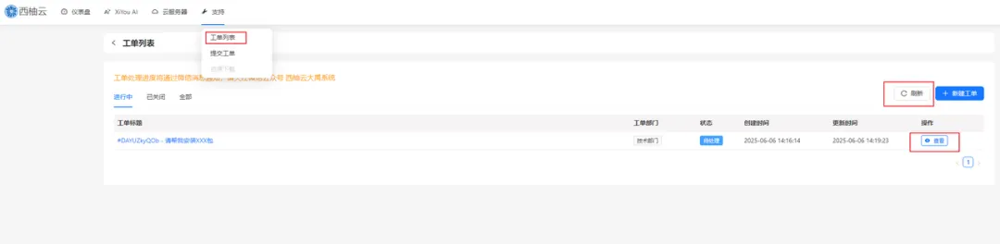
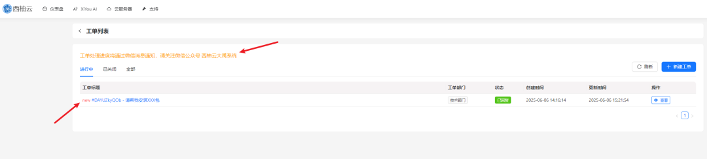
微信同步通知
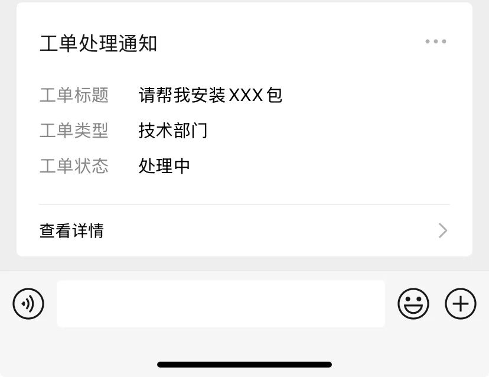
- 您在工作时间内提交的工单，将在1小时内答复，24小时内解决（极度疑难问题除外）；非工作时间提交的问题，由值班人员尽快答复。大家可以白嫖五次技术支持。
个人中心
- 从下面这些地方可以进入个人中心
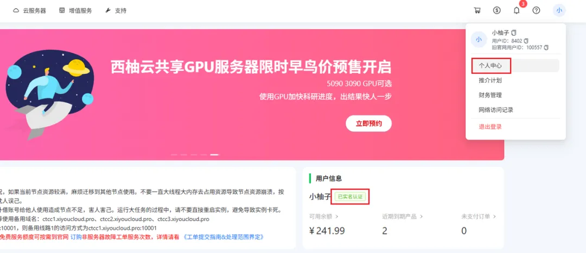
个人信息
- 可以在个人信息页面补充公司|单位名称以及详细地址。
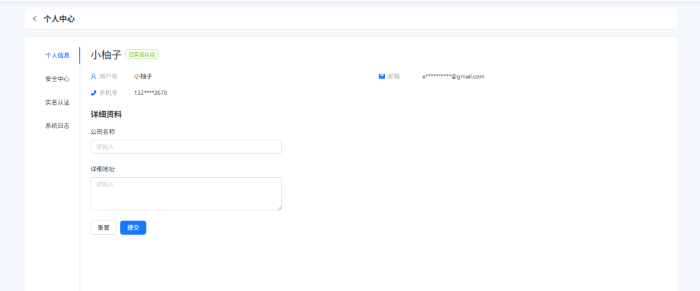
安全中心
- 在安全中心页面，可以修改密码、绑定手机号以及邮箱，还可以关注公众号实现快捷登录以及实时接收系统通知。
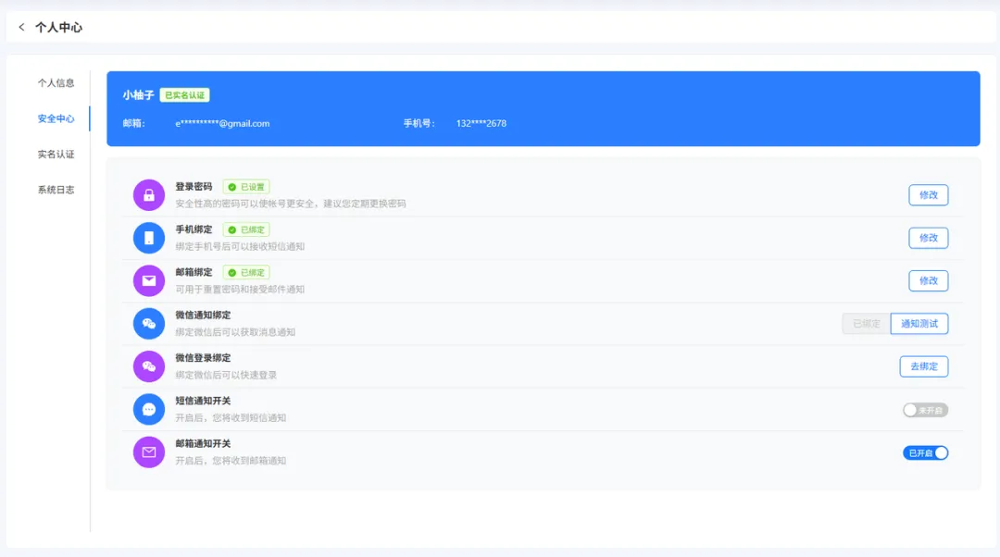
实名认证
- 购买产品前需要先完成实名认证，实名认证需要手机号、身份证、真实姓名三要素一致。
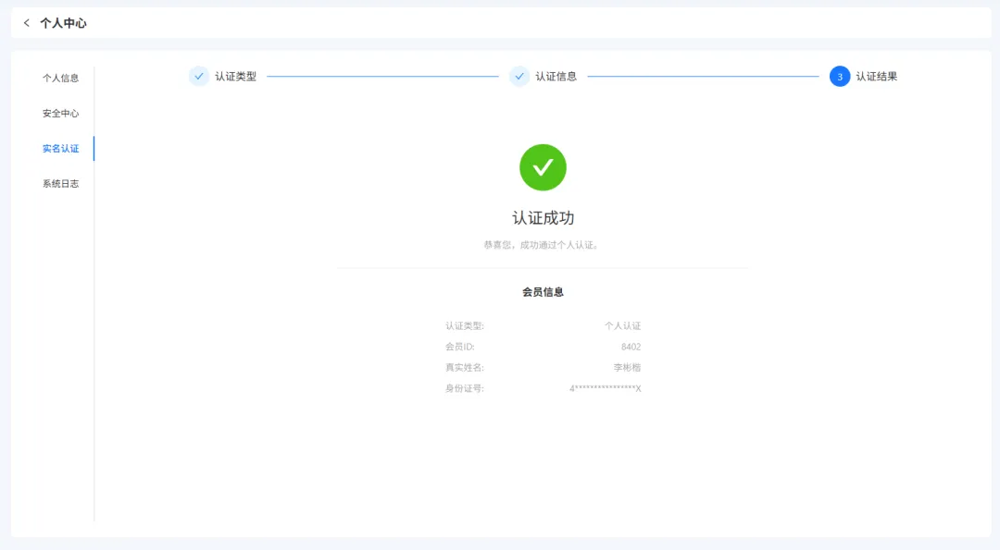
系统日志
- 在系统日志模块，可以看到自己在大禹系统上的操作记录。
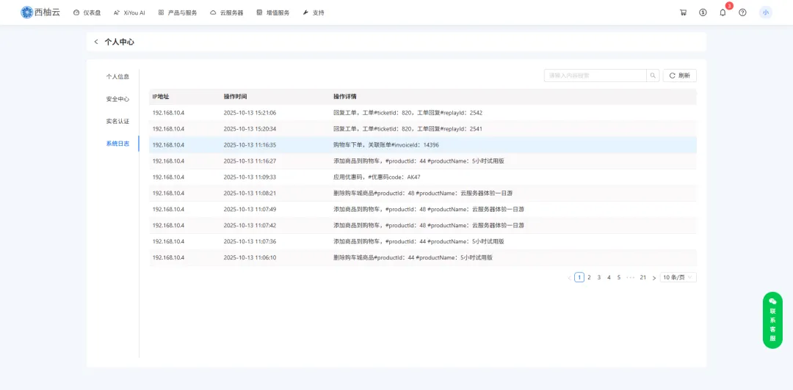
推介计划
新客户通过推广链接注册/登录与推广者建立关联，关联有效期内，购买指定返佣产品即为有效订单，推荐成功可获现金奖励。如果有意成为推介人，请联系西柚云客服拉起专属对接群聊一对一沟通。
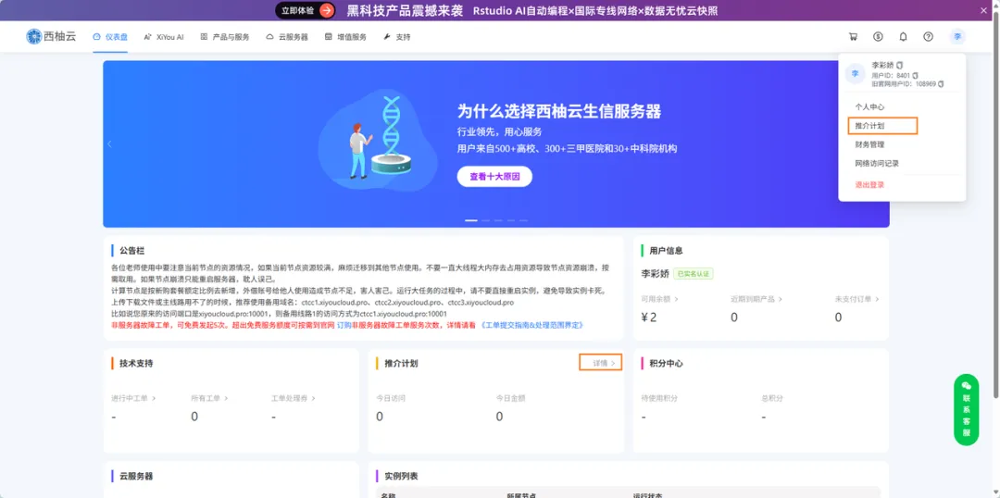
财务管理
- 从下面这些地方都可以进入财务管理页面。
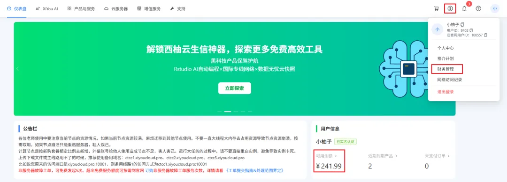
账户充值
- 可以充值金额到账户用于购买站内的产品与服务，后续支付直接使用余额支付即可。
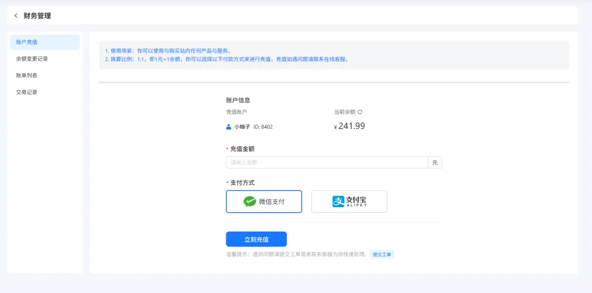
余额变更记录
- 在这里可以看到余额的每一笔变动。
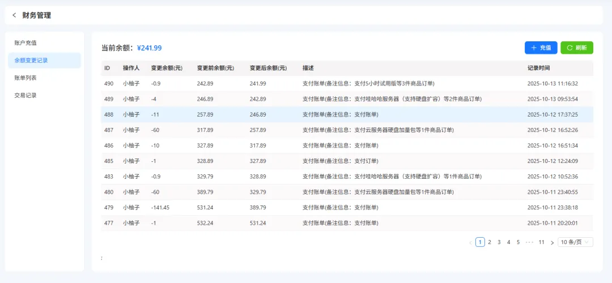
账单列表
- 在这里可以看到全部的账单。如果是未支付的账单，可以手动取消；超过1天未支付，系统会自动取消该笔账单。
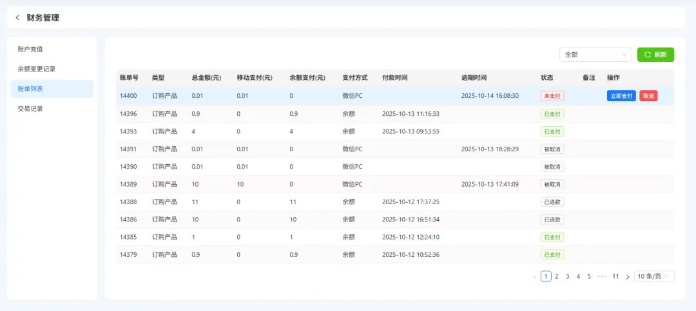
交易记录
- 这里可以看到具体的消费记录以及充值记录。
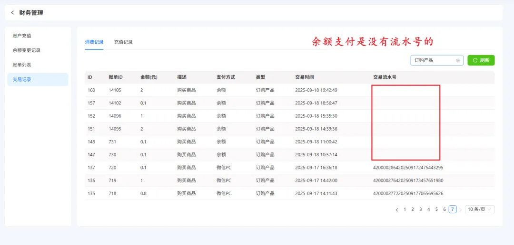
结语
在大禹系统的使用过程中，有任何问题或者需求均可联系我们，我们将第一时间处理并赠送Rstudio编程助手Token、国际专线等服务。

如何联系我们

 留一个领取资料、开箱即用的单细胞分析镜像的微信号[Biomamba_zhushou]，方便各位随时交流。同时我们也构建了交流群矩阵，欢迎大家入群讨论。
大家可以阅读完这几篇之后添加给生信入门初学者的小贴士
没有检索，就没有发言权
留一个领取资料、开箱即用的单细胞分析镜像的微信号[Biomamba_zhushou]，方便各位随时交流。同时我们也构建了交流群矩阵，欢迎大家入群讨论。
大家可以阅读完这几篇之后添加给生信入门初学者的小贴士
没有检索，就没有发言权
已有生信基地联系方式的同学无需重复添加
 您点的每个赞和在看，我都认真当成了喜欢
您点的每个赞和在看，我都认真当成了喜欢